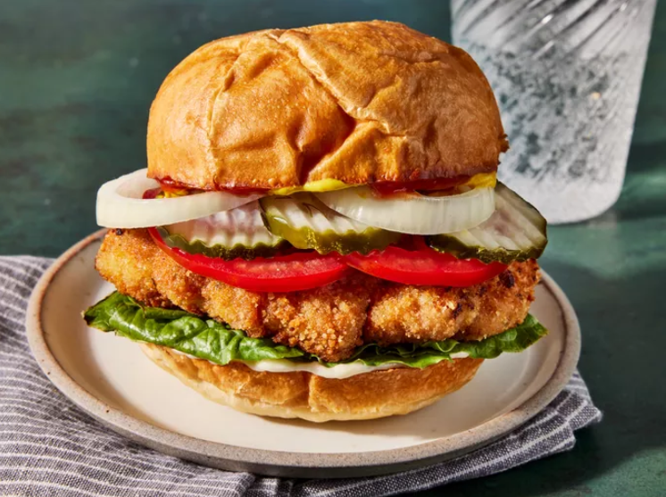

Traditional Indiana Breaded Tenderloin Sandwich

Description
An Indiana pork tenderloin sandwich consists of a breaded
and fried pork tenderloin cutlet that's served on a bulky kaiser roll with lettuce,
tomatoes, and basic condiments. It's not well known outside of the state,
but if you ever come to Indiana, make it a point to try this specialty sandwich.
Ingrédients
- 4 (4 ounce) slices of pork tenderloin, cut across the grain
- 1 large egg, beaten
- 2 tablespoons milk
- 1 teaspoon salt
- ¼ teaspoon ground black pepper
- ¼ teaspoon garlic powder
- ¼ teaspoon onion powder
- ¼ teaspoon seasoned salt
- ¼ teaspoon dried marjoram
- ¼ teaspoon dried oregano
- 1 ½ cups bread crumbs
- ½ cup peanut oil for frying
- 4 kaiser rolls, split
- 4 teaspoons mayonnaise, or as needed (Optional)
- 4 teaspoons ketchup, or as needed (Optional)
- 4 teaspoons prepared yellow mustard, or as needed (Optional)
- 4 slices dill pickle (Optional)
- 4 slices onion (Optional)
- 4 slices tomato (Optional)
- 4 leaves lettuce (Optional)
Étapes
- Flatten pork slices, one at a time, by placing them between two pieces of sturdy plastic and pounding with a meat mallet until 1/4-inch thick and about 3 1/2 x 5 inches in size.
- Whisk the egg and milk together in a shallow bowl.
- Stir in the salt, pepper, garlic powder, onion powder, seasoned salt, marjoram, and oregano until well blended.
- Place the bread crumbs into another shallow bowl.
- Dip each flattened cutlet into the seasoned egg mixture, then dip it into the bread crumbs until thoroughly coated.
- Set the breaded cutlets in a single layer on a piece of parchment or waxed paper.
- Heat the oil in a large skillet until shimmering. Gently lower the cutlets into the hot skillet and fry until golden brown, about 4 minutes per side. Drain on paper towels.
- Set an oven rack about 6 inches from the heat source and preheat the oven's broiler. Place the kaiser rolls, split-sides up, onto a baking sheet.
- Broil in the preheated oven until toasted and hot, about 1 minute.
- Remove from the oven and assemble the sandwiches: place the fried cutlets on the roll bottoms, add the toppings in the desired order, top the sandwiches with the roll tops, and serve.
Accueil